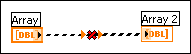
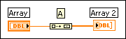
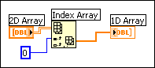

You have wired two arrays of different dimensions, such as a 1D array to a 2D array.
To correct this error, change the dimensions of one array to match the other. If there are fewer dimensions in the source array than in the resulting array, right-click the wire and select Insert Build Array from the shortcut menu.
If there are more dimensions in the source array than in the resulting array, right-click the wire and select Index Array from the shortcut menu. In the following example, the 0 wired to the index input of the Index Array function means that row 0 of the 2D array control is the input value for the 1D array indicator.
